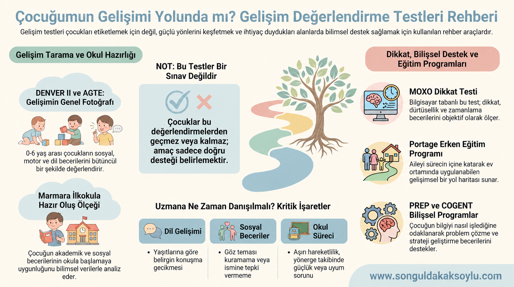

Değerlendirme

Kısa yanıt: Çocuk gelişim testleri; çocuğun dil, bilişsel, motor, sosyal-duygusal, öz bakım, dikkat veya okula hazır oluş gibi alanlardaki becerilerini yapılandırılmış biçimde incelemeye yardımcı olan araçlardır. Ancak hiçbir test tek başına çocuğu bütünüyle açıklamaz veya bütün gelişimsel tanıları koymaz. Bilimsel bir değerlendirme; uygun aracın seçilmesini, aile ve öğretmen görüşünü, çocuk gözlemini, gelişim öyküsünü ve farklı ortamlardaki işlevselliği birlikte ele alır. Amaç çocuğu etiketlemek değil, güçlü yönleri ve destek gereksinimlerini belirleyerek uygun yönlendirme yapmaktır.
Gelişimsel değerlendirme nedir?
Gelişimsel değerlendirme, çocuğun yalnızca yaşıtlarına göre nerede olduğunu belirleme işlemi değildir. Çocuğun hangi becerileri bağımsız yaptığı, hangi becerilerde desteğe ihtiyaç duyduğu, öğrenmesini nelerin kolaylaştırdığı ve günlük yaşamda nasıl işlev gösterdiği sistematik olarak incelenir.
Değerlendirme şu bilgi kaynaklarını bir araya getirebilir:
- Çocuğun doğum, sağlık, gelişim ve eğitim öyküsü
- Ebeveynin gözlemleri ve kaygıları
- Öğretmenin farklı ortam ve görevlerdeki gözlemleri
- Çocukla oyun ve görev sırasında yapılan doğrudan gözlem
- Standardize tarama veya değerlendirme araçları
- Dil, motor, dikkat, öğrenme ve uyumsal becerilere ilişkin ek incelemeler
- Gerektiğinde çocuk hekimi, çocuk ve ergen psikiyatristi, psikolog, dil ve konuşma terapisti, fizyoterapist veya diğer uzmanların görüşü
Test puanı, bu bütünün yalnızca bir parçasıdır.
Gelişimsel izlem, tarama, değerlendirme ve tanı aynı şey mi?
Hayır. Bu kavramlar sık karıştırılır:
| Süreç | Temel amacı | Nasıl yürütülür? | Sonucu ne sağlar? |
|---|---|---|---|
| Gelişimsel izlem | Gelişimi zaman içinde takip etmek | Aile ve öğretmen gözlemi, kilometre taşları, rutin görüşmeler | Yeni bir kaygının erken fark edilmesine yardımcı olur. |
| Gelişimsel tarama | Daha ayrıntılı değerlendirme gerektirebilecek riski belirlemek | Belirli yaşlarda geçerli ve standardize araçlar | “Risk var/yok” konusunda yönlendirici bilgi verir; tanı koymaz. |
| Kapsamlı değerlendirme | Güçlü yönleri, güçlüğün niteliğini ve destek gereksinimini anlamak | Görüşme, gözlem, farklı testler ve disiplinler arası bilgi | Bireyselleştirilmiş destek ve yönlendirme planına temel oluşturur. |
| Tanısal değerlendirme | Belirli bir sağlık veya gelişimsel durumun tanı ölçütlerini incelemek | Yetkili sağlık profesyonellerince klinik değerlendirme | Uygun olduğunda tıbbi/klinik tanı sürecini sonuçlandırır. |
CDC ve Amerikan Pediatri Akademisi, gelişimsel izlemin düzenli sağlık görüşmelerinde sürdürülmesini; standardize gelişimsel taramanın ise belirli dönemlerde ve kaygı ortaya çıktığında yapılmasını önermektedir. Bu uluslararası zamanlama bilgisi Türkiye’deki sağlık sisteminin uygulamalarının yerine geçmez; çocuğunuz için aile hekiminiz veya çocuk hekiminizle görüşebilirsiniz.
Çocuk gelişimi ne zaman değerlendirilmelidir?
Değerlendirme için mutlaka ciddi bir sorun ortaya çıkmasını beklemek gerekmez. Aşağıdaki durumlarda görüş alınabilir:
- Ebeveyn veya öğretmenin gelişime ilişkin süregelen kaygısı varsa
- Dil, hareket, oyun, sosyal iletişim veya öz bakım becerilerinde belirgin gecikme gözleniyorsa
- Çocuk daha önce kazandığı bir beceriyi kaybettiyse
- İsme tepki, ortak dikkat, göz teması veya karşılıklı iletişimde belirgin güçlük varsa
- Akran ilişkileri ve grup ortamına katılım uzun süre zorlanıyorsa
- Okula geçiş, yönerge takibi veya temel kavramlarda güçlük yaşanıyorsa
- Dikkat, dürtüsellik veya aşırı hareketlilik günlük işlevleri birden fazla ortamda etkiliyorsa
- Okuma, yazma veya matematik öğreniminde beklenenden belirgin güçlük varsa
- Erken doğum, nörolojik durum, işitme-görme kaygısı veya gelişimsel risk öyküsü bulunuyorsa
Özellikle kazanılmış beceri kaybında beklemeden çocuk hekimiyle görüşülmelidir.
Doğru değerlendirme aracı nasıl seçilir?
“En iyi gelişim testi hangisi?” sorusunun tek bir cevabı yoktur. Uygun araç şu ölçütlere göre seçilir:
- Çocuğun kronolojik ve gerektiğinde düzeltilmiş yaşı
- Değerlendirilmek istenen alan
- Tarama mı, ayrıntılı değerlendirme mi yapılacağı
- Aracın geliştirildiği ve normlandığı grup
- Türkçe uyarlama, geçerlik ve güvenirlik bilgileri
- Uygulayıcının eğitim ve yetkinliği
- Çocuğun dili, kültürel çevresi ve engel durumu
- Sonucun hangi kararda kullanılacağı
Bir aracın popüler veya kısa olması, o çocuk için uygun olduğu anlamına gelmez.
DENVER II Gelişimsel Tarama Testi nedir?
DENVER II, doğumdan yaklaşık 6 yaşa kadar çocuklarda gelişimsel riskleri taramak amacıyla kullanılan bir araçtır. Çocuğun becerileri yaşına göre kişisel-sosyal, ince motor-uyumsal, dil ve kaba motor alanlarında ele alınır. Bazı maddeler çocuğun doğrudan performansı, bazıları ise bakım veren bilgisi üzerinden değerlendirilir.
DENVER II ne sağlar?
- Yaşa göre beklenen becerilerde olası riskleri fark etmeye yardımcı olur.
- Hangi gelişim alanının daha ayrıntılı incelenmesi gerektiğine ilişkin ipucu verebilir.
- Uygun koşullarda belirli aralıklarla tekrarlandığında gelişimsel izlemi destekleyebilir.
DENVER II ne sağlamaz?
- Zekâ puanı vermez.
- Otizm, dil bozukluğu, DEHB veya zihinsel yetersizlik tanısı koymaz.
- Tek başına çocuğun okul başarısını öngörmez.
- “Normal” sonuç, gelecekte hiçbir gelişimsel güçlük olmayacağını garanti etmez.
- Riskli sonuç, çocuğun kesinlikle bir bozukluğu olduğu anlamına gelmez.
Tarama sonucu kaygı oluşturuyorsa uygun alanda daha kapsamlı değerlendirme yapılmalıdır.
Ankara Gelişim Tarama Envanteri (AGTE) nedir?
AGTE, Türkiye’de 0–6 yaş çocuklarının gelişimini bakım veren görüşmesine dayalı olarak taramak amacıyla geliştirilmiş 154 maddelik bir envanterdir. Dil-bilişsel, ince motor, kaba motor ve sosyal beceri-öz bakım alanlarının yanı sıra toplam gelişim puanı sunar.
AGTE’nin güçlü yönlerinden biri, çocuğu günlük yaşamda yakından gözlemleyen ebeveyn veya bakım verenin bilgisini sistematik hâle getirmesidir. Ancak ebeveyn bildirimi; soruların yorumlanması, beklentiler, hatırlama ve çocuğu farklı ortamlarda görme fırsatı gibi etkenlerden etkilenebilir.
Bu nedenle AGTE sonucu mümkün olduğunda çocuk gözlemi, gelişim öyküsü ve diğer bilgi kaynaklarıyla birlikte yorumlanmalıdır. AGTE de tek başına tanı aracı değildir.
DENVER II ile AGTE arasındaki fark nedir?
| Özellik | DENVER II | AGTE |
|---|---|---|
| Temel amaç | Gelişimsel tarama | Gelişimsel tarama |
| Yaklaşık yaş aralığı | Doğum–6 yaş | 0–6 yaş |
| Bilgi kaynağı | Doğrudan uygulama ile bakım veren bilgisini birleştirir | Ağırlıklı olarak ebeveyn/bakım veren görüşmesine dayanır |
| Alanlar | Kişisel-sosyal, ince motor-uyumsal, dil, kaba motor | Dil-bilişsel, ince motor, kaba motor, sosyal beceri-öz bakım |
| Tanı koyar mı? | Hayır | Hayır |
İki aracın sonucu birebir aynı olmak zorunda değildir. Farklı yöntemlerle bilgi toplamaları, farklı sonuçlar üretmelerinin nedenlerinden biri olabilir. Bu durum testlerden birinin otomatik olarak “yanlış” olduğu anlamına gelmez; klinik ve gelişimsel yorum gerektirir.
Marmara İlköğretime Hazır Oluş Ölçeği nedir?
Marmara İlköğretime Hazır Oluş Ölçeği, okul öncesinden ilköğretime geçiş dönemindeki 60–78 aylık çocukların hazır oluş düzeyini değerlendirmek amacıyla Türkiye’de geliştirilmiştir. Gelişim ve uygulama formları çocuğa ilişkin farklı kaynaklardan bilgi toplamayı amaçlar.
Okula hazır oluş yalnız harf, sayı veya kalem tutma becerisinden oluşmaz. Dil, bilişsel beceriler, motor yeterlik, sosyal-duygusal uyum, öz bakım, yönerge takibi, dikkat ve öğrenmeye yaklaşım birlikte önem taşır.
Ölçek sonucu nasıl kullanılmalı?
- Çocuğun güçlü ve desteklenmesi gereken okul hazırlık alanlarını belirlemek
- Ev ve okulda uygulanabilir hedefler oluşturmak
- Öğretmen–aile iş birliğini yapılandırmak
- Gerekirse daha ayrıntılı değerlendirmeye yönlendirmek
Sonuç, tek başına “okula başlamalı/başlamamalı” kararı veya çocuğun gelecekteki akademik başarısının kesin tahmini olarak kullanılmamalıdır. Okula başlama kararında güncel mevzuat, çocuğun bütün gelişimsel profili, sağlık ve eğitim değerlendirmeleri birlikte ele alınmalıdır.
Portage Erken Eğitim Programı nedir?
Portage yalnızca bir “gelişim testi” değildir. Erken çocukluk döneminde gelişimsel becerileri gözlemlemeye, hedef belirlemeye ve bu hedefleri günlük yaşam içinde aile katılımıyla desteklemeye yönelik bir erken eğitim yaklaşımıdır. Tarihsel Portage rehberi, gelişimsel davranış kontrol listesi ile öğretim etkinliklerini bir araya getirir.
Portage kapsamında bilişsel, dil, motor, sosyal, öz bakım ve erken gelişim alanları ele alınabilir. Kontrol listesi çocuğun mevcut becerilerini ve sıradaki öğretim hedeflerini belirlemeye yardımcı olabilir; fakat klinik tanı testi değildir.
Portage’ın önemli yönü, değerlendirme sonucunu doğrudan günlük yaşam hedeflerine dönüştürmesidir. Örneğin “ince motor puanı düşük” demekle kalmak yerine, çocuğun kaşık kullanma, mandal takma veya düğme açma gibi işlevsel becerileri için öğretim planlanabilir.
MOXO dikkat testi nedir?
MOXO, dikkat performansını bilgisayar ortamında inceleyen, görsel ve işitsel dikkat dağıtıcılar içeren bir sürekli performans testi türüdür. Performans; dikkat, zamanlama, dürtüsellik ve hiperaktivite olarak adlandırılan göstergeler üzerinden raporlanabilir.
MOXO ne sağlayabilir?
- Belirli ve yapılandırılmış bir görevde çocuğun tepki örüntüsüne ilişkin nesnel veri sunabilir.
- Klinik görüşme, ebeveyn ve öğretmen ölçekleriyle birlikte dikkat değerlendirmesine ek bilgi sağlayabilir.
- Değerlendirme veya izlem sürecinde bir performans örneği oluşturabilir.
MOXO neden tek başına DEHB tanısı koymaz?
DEHB tanısı belirtilerin gelişim öyküsünü, birden fazla ortamda görülmesini, günlük işlevlerde bozulmayı ve başka açıklamaların dışlanmasını gerektirir. Çocuk test ortamında iyi performans gösterse de günlük yaşamda zorlanabilir; uykusuzluk, kaygı, motivasyon, öğrenme güçlüğü veya test koşulları performansı etkileyebilir.
MOXO sonucu “DEHB var/yok” biçiminde tek başına yorumlanmamalıdır. Bilgisayar tabanlı performans testi klinik tanının yerine değil, kapsamlı değerlendirmenin bir parçası olarak kullanılmalıdır.
PREP ve COGENT test midir?
Hayır. PREP ve COGENT ölçme aracı değil, yapılandırılmış eğitim/müdahale programlarıdır.
- COGENT, daha çok erken dönemde bilişsel işlemleme, dil, fonolojik farkındalık ve erken okuryazarlık süreçlerini desteklemeyi amaçlar.
- PREP, okuma güçlüğü yaşayan okul çağı çocuklarında PASS yaklaşımına dayalı işlemleme stratejilerini okuma görevlerine aktarmayı amaçlar.
Bu programlara başlanmadan önce değerlendirme yapılabilir; program süresince ilerleme ölçülebilir. Fakat program uygulamak ile test yapmak aynı işlem değildir. PREP ve COGENT tanı koymaz, genel zekâyı artırma garantisi vermez ve her çocuk için uygun değildir.
Bu araçlar bir bakışta nasıl ayrılır?
| Araç/program | Türü | Genel hedefi | Tek başına tanı koyar mı? |
|---|---|---|---|
| DENVER II | Gelişimsel tarama | 0–6 yaş gelişimsel riskleri belirlemek | Hayır |
| AGTE | Bakım veren bildirimli gelişimsel tarama | 0–6 yaş gelişim profilini taramak | Hayır |
| Marmara İlköğretime Hazır Oluş | Okula hazır oluş değerlendirmesi | 60–78 ay okul geçişi becerilerini incelemek | Hayır |
| Portage | Değerlendirme ve erken eğitim rehberi | Becerileri belirleyip bireysel öğretim hedefleri oluşturmak | Hayır |
| MOXO | Bilgisayar tabanlı dikkat performans testi | Yapılandırılmış görevde dikkat ve tepki örüntüsünü incelemek | Hayır |
| COGENT | Eğitim/müdahale programı | Erken bilişsel, dilsel ve okuryazarlık süreçlerini desteklemek | Uygulanamaz; test değildir. |
| PREP | Okuma destek programı | Okumayla ilişkili işlemleme stratejilerini desteklemek | Uygulanamaz; test değildir. |
Bilimsel bir değerlendirme süreci nasıl ilerler?
1. Başvuru sorusu netleştirilir
“Gelişimi geri mi?” gibi geniş bir kaygı, gözlenebilir örneklere dönüştürülür: Kaç basamaklı yönergeyi takip ediyor? Sözcükleri nasıl birleştiriyor? Akran oyununa nasıl katılıyor? Hangi görevlerde dikkati dağılıyor?
2. Gelişim ve sağlık öyküsü alınır
Gebelik, doğum, erken gelişim, sağlık, işitme-görme, uyku, beslenme, eğitim fırsatları, aile dili ve önemli yaşam olayları konuşulur.
3. Uygun araçlar seçilir
Her başvuruda aynı test paketi uygulanmaz. Araç, çocuğun yaşına, dile, başvuru nedenine ve değerlendirme amacına göre seçilir.
4. Çocuk farklı yollarla gözlenir
Yapılandırılmış görevlerin yanında oyun, iletişim, yardım isteme, hata karşısındaki tepki ve yetişkin desteğinden yararlanma biçimi değerlendirilir.
5. Bilgiler birlikte yorumlanır
Test sonucu; aile, öğretmen ve gözlem bilgileriyle karşılaştırılır. Birbiriyle uyuşmayan sonuçlar saklanmaz; olası nedenleri incelenir.
6. Aileye anlaşılır geri bildirim verilir
Yalnız puan veya etiket paylaşılmaz. Güçlü yönler, destek alanları, sonuçların sınırları ve izlenecek adımlar açıklanır.
7. Destek ve izlem planı oluşturulur
Ev ve okul hedefleri, gerekirse uzman yönlendirmeleri, uygulama sıklığı ve yeniden değerlendirme zamanı belirlenir.
Değerlendirme raporunda neler bulunmalı?
- Başvuru nedeni ve değerlendirme sorusu
- Kullanılan araçların adları ve amaçları
- Bilgi kaynakları ve uygulama koşulları
- Çocuğun değerlendirme sırasındaki davranışları
- Güçlü yönleri ve destek gereksinimleri
- Puanların anlaşılır, ihtiyatlı yorumu
- Testin ve değerlendirmenin sınırlılıkları
- Ev, okul ve uzman yönlendirmelerine ilişkin somut öneriler
- İzlem veya yeniden değerlendirme planı
“Yaşıtlarının gerisinde” gibi tek cümlelik sonuçlar aileye yeterli yol haritası sunmaz.
Ebeveynler değerlendirme öncesinde ne hazırlamalı?
- Varsa önceki rapor ve test sonuçları
- Sağlık, işitme ve görme bilgileri
- Öğretmenin kısa gözlemi veya okul çalışması örnekleri
- Ebeveyni kaygılandıran davranışların somut örnekleri
- Çocuğun güçlü olduğu etkinlikler
- Evde konuşulan diller
- Uyku, ekran, oyun ve günlük rutin bilgileri
Çocuğa “Seni teste götürüyoruz, bakalım başarabilecek misin?” demek yerine “Bir uzman seninle konuşacak, oyunlar ve etkinlikler yapacak; bazıları kolay, bazıları zor gelebilir” denebilir.
Sonuçlar çocuğa nasıl anlatılmalı?
Çocuğu puanla, tanıyla veya kardeşiyle kıyaslamayın. Yaşına uygun bir açıklama kullanın:
“Bazı şeyleri yaparken çok güçlü olduğunu, bazı şeylerde ise farklı yollar denemenin sana yardımcı olacağını gördük. Şimdi öğretmenin ve biz sana daha uygun şekilde destek olacağız.”
Değerlendirme, çocuğun kendisini “başarısız” hissettiği yeni bir sınava dönüşmemelidir.
Değerlendirmede sık yapılan hatalar
- Tarama sonucunu kesin tanı gibi yorumlamak
- Tek test puanıyla karar vermek
- Güncel olmayan veya çocuğun yaşına uygun olmayan araç kullanmak
- Uygulayıcı eğitimi ve yetkinliğini sorgulamamak
- Dil ve kültürel özellikleri göz ardı etmek
- Çocuğun yorgunluk, açlık, hastalık veya kaygısını dikkate almamak
- PREP, COGENT ve Portage gibi programları “test” olarak tanıtmak
- MOXO sonucunu tek başına DEHB tanısı saymak
- Okula hazır oluş sonucunu çocuğun değerini veya gelecekteki başarısını gösteren puana dönüştürmek
- Aileye yalnız sorunları söyleyip somut destek planı sunmamak
Erken değerlendirme neden önemlidir?
Erken fark etme, çocuğun ihtiyacına daha erken ve uygun destek planlanmasını sağlayabilir. Fakat “erken” sözcüğü aceleyle tanı koymak veya her bireysel farklılığı sorunlaştırmak anlamına gelmez. Bilimsel yaklaşım iki riski dengeler: Önemli bir güçlüğü “nasıl olsa geçer” diyerek geciktirmemek ve gelişimin doğal çeşitliliğini gereksiz biçimde etiketlememek.
En önemli yönlendirme ilkesi şudur: Ebeveynin gelişimsel kaygısı ciddiye alınmalı; tarama sonucu ne olursa olsun kaygı sürüyorsa çocuk yeniden ve daha kapsamlı değerlendirilmelidir.
Sonuç
Gelişim testlerinin gücü, çocuğa tek bir puan veya etiket vermelerinde değil; doğru soruyu sormaya ve uygun desteği planlamaya yardımcı olmalarındadır. DENVER II ve AGTE gelişimsel taramaya, Marmara İlköğretime Hazır Oluş okul geçişi becerilerine, MOXO yapılandırılmış dikkat performansına ilişkin bilgi sunar. Portage, PREP ve COGENT ise değerlendirme sonucunda seçilebilecek eğitimsel destek süreçleriyle ilişkilidir.
Doğru değerlendirme “Çocuğum normal mi?” sorusunu tek kelimeyle yanıtlamaz. Daha yararlı üç soruya yönelir: Çocuğumun güçlü yönleri neler? Nerede desteğe ihtiyaç duyuyor? Bu desteği günlük yaşamda nasıl sağlayabiliriz?
Sık sorulan sorular
Gelişim testi çocuğa tanı koyar mı?
Çoğu gelişim testi tarama veya değerlendirme amacı taşır ve tek başına tanı koymaz. Tanı gerektiğinde yetkili sağlık profesyonelinin klinik değerlendirmesi, gelişim öyküsü ve farklı bilgi kaynaklarıyla konur.
DENVER II zekâ testi midir?
Hayır. DENVER II, küçük çocuklarda kişisel-sosyal, ince motor-uyumsal, dil ve kaba motor gelişim alanlarını tarayan bir araçtır; zekâ puanı vermez.
AGTE ile DENVER II aynı sonucu vermek zorunda mı?
Hayır. AGTE ağırlıklı olarak bakım veren bildirimine, DENVER II ise doğrudan uygulama ile bakım veren bilgisinin birleşimine dayanır. Farklı bilgi toplama yöntemleri nedeniyle sonuçlar değişebilir ve uzman tarafından birlikte yorumlanmalıdır.
MOXO testi DEHB tanısı koyar mı?
Hayır. MOXO, yapılandırılmış görevde dikkat ve tepki örüntüsü hakkında destekleyici veri sunabilir. DEHB tanısı gelişim öyküsü, birden fazla ortam, işlev kaybı, görüşme ve diğer ölçeklerle kapsamlı klinik değerlendirme gerektirir.
Okula hazır oluş testi çocuğun okula başlayıp başlamayacağını belirler mi?
Tek başına belirlemez. Sonuç; çocuğun bütün gelişimsel profili, sağlık ve eğitim bilgileri, aile-öğretmen gözlemleri ve güncel mevzuatla birlikte ele alınmalıdır.
Portage, PREP ve COGENT gelişim testi midir?
Hayır. Portage değerlendirmeyi eğitim hedefleriyle birleştiren erken eğitim yaklaşımıdır; PREP ve COGENT yapılandırılmış eğitim/müdahale programlarıdır. Tanı testi değildirler.
Çocuğum testte düşük sonuç aldı; bu kalıcı bir durum mudur?
Tek bir sonuç kalıcı kapasiteyi göstermez. Performans gelişim, deneyim, dil, sağlık, dikkat ve uygulama koşullarından etkilenebilir. Sonuç uygun destek ve izlem planıyla birlikte değerlendirilmelidir.
Değerlendirme ne sıklıkla tekrarlanmalı?
Her çocuk ve araç için geçerli tek bir süre yoktur. Tekrar zamanı başvuru nedeni, çocuğun yaşı, kullanılan aracın kuralları, verilen destek ve izlem amacına göre belirlenmelidir. Çok kısa aralıklarla tekrarlama öğrenme etkisi oluşturabilir.
Kaynaklar
- Lipkin, P. H., & Macias, M. M. (2020). *Promoting Optimal Development: Identifying Infants and Young Children With Developmental Disorders Through Developmental Surveillance and Screening*. Pediatrics, 145(1), e20193449. https://doi.org/10.1542/peds.2019-3449
- Centers for Disease Control and Prevention. (2026). *Developmental Monitoring and Screening*.
- Frankenburg, W. K., Dodds, J., Archer, P., Shapiro, H., & Bresnick, B. (1992). *The Denver II: A Major Revision and Restandardization of the Denver Developmental Screening Test*. Pediatrics, 89(1), 91–97.
- Savaşır, I., Sezgin, N., & Erol, N. (1995). *Ankara Gelişim Tarama Envanteri El Kitabı*. Ankara Üniversitesi Tıp Fakültesi.
- Polat Unutkan, Ö. (2003). *Marmara İlköğretime Hazır Oluş Ölçeğinin Geliştirilmesi ve Standardizasyonu*. Marmara Üniversitesi.
- Shearer, M. S., & Shearer, D. E. (1972). *The Portage Project: A Model for Early Childhood Education*. Exceptional Children.
- Berger, I., Slobodin, O., Aboud, M., Melamed, J., & Cassuto, H. (2013). *Maturational Delay in ADHD: Evidence From CPT*. Frontiers in Human Neuroscience, 7, 691.
- Das, J. P., Hayward, D., Samantaray, S., & Panda, J. J. (2006). *Cognitive Enhancement Training (COGENT): What Is It?* Journal of Cognitive Education and Psychology, 5(3), 328–335.
- Mahapatra, S., Das, J. P., Stack-Cutler, H., & Parrila, R. (2010). *Remediating Reading Comprehension Difficulties: A Cognitive Processing Approach*. Reading Psychology, 31(5), 428–453.
---